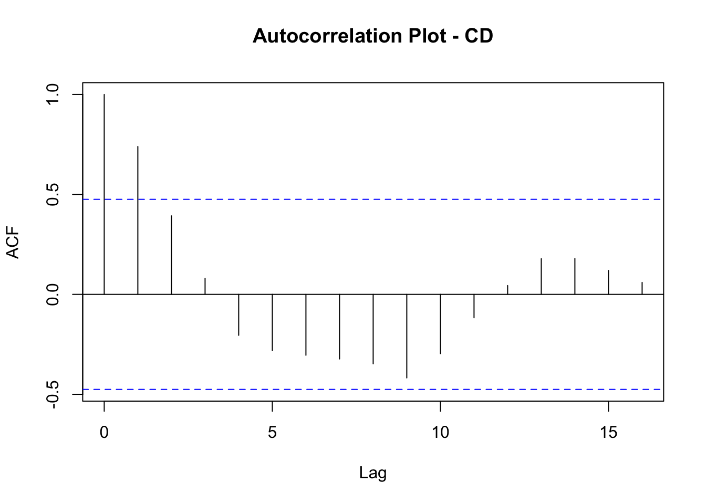
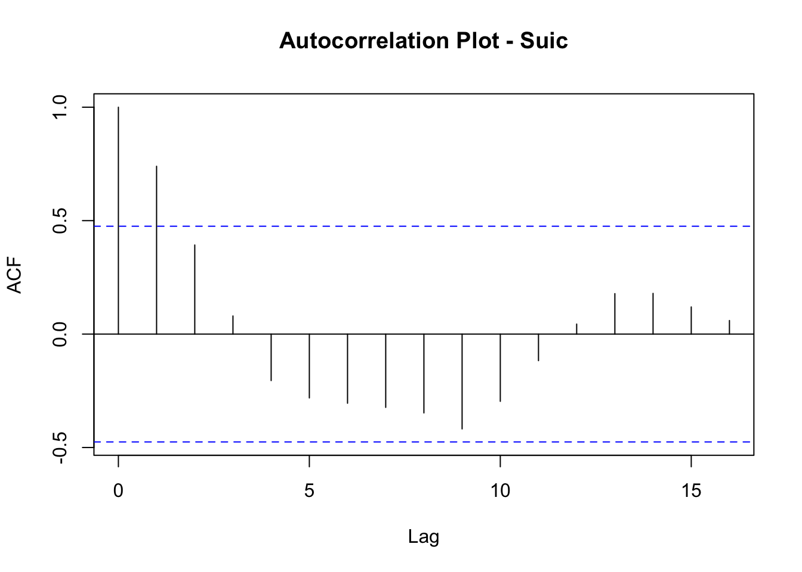

For this portfolio, I’d like to find a way to include a non-cluttered, key takeaway figure within a graph. To begin with, I will start with the simple p value. Specifically, I would like to depict the p value somewhere on the graph itself with a simple text box containing “p=#.##”. Conceptually, it seems to me that including the p value on the graph itself might make for a better or more persuasive visual presentation. So, let’s see what it might look like to show the relationship among variables in the graph and provide a statistical figure on that same graph. Note: I use a two sample t-test AKA independent samples t-test below. Specifically, the Welch’s t-test. I believe that there are issues with the use of measures of statistical significance when exhaustive data are analyzed. That is the case with these two variables (military suicide and combat deaths) which are not “sample” data but rather all available data on the subjects. But for demonstration purposes, I’ll use the p value here.
r = getOption("repos")
r["CRAN"] = "http://cran.us.r-project.org"
options(repos = r)install.packages('tidyr')##
## The downloaded binary packages are in
## /var/folders/ls/z3xhd0bx0jzchy3zd1hkbnhr0000gn/T//Rtmpmom5Fk/downloaded_packagesinstall.packages('readr')##
## The downloaded binary packages are in
## /var/folders/ls/z3xhd0bx0jzchy3zd1hkbnhr0000gn/T//Rtmpmom5Fk/downloaded_packageslibrary(ggplot2)
library(tidyr)library(readr)
dfMilStatsTest <- read.csv("~/Documents/GitHub/Portfolio6-VizStats/MilStatsExcel.csv")library(tidyverse)## ── Attaching packages ─────────────────────────────────────── tidyverse 1.3.1 ──## ✓ tibble 3.1.6 ✓ stringr 1.4.0
## ✓ purrr 0.3.4 ✓ forcats 0.5.1
## ✓ dplyr 1.0.8## ── Conflicts ────────────────────────────────────────── tidyverse_conflicts() ──
## x dplyr::filter() masks stats::filter()
## x dplyr::lag() masks stats::lag()library(ggpubr)
library(rstatix)##
## Attaching package: 'rstatix'## The following object is masked from 'package:stats':
##
## filterdfMilStatsTest %>%
group_by(Object) %>%
get_summary_stats(Value, type = "mean_sd")## # A tibble: 2 × 5
## Object variable n mean sd
## <chr> <chr> <dbl> <dbl> <dbl>
## 1 combat_deaths Value 17 306. 313.
## 2 suicides Value 17 297. 132.res <- t.test(Value ~ Object, data = dfMilStatsTest, paired = TRUE)
res##
## Paired t-test
##
## data: Value by Object
## t = 0.10087, df = 16, p-value = 0.9209
## alternative hypothesis: true difference in means is not equal to 0
## 95 percent confidence interval:
## -189.5716 208.5128
## sample estimates:
## mean of the differences
## 9.470588This website contains an excellent tutorial on how to use R to do time series correlations: https://www.lobdata.com.br/2020/09/15/how-to-perform-correlation-analysis-in-time-series-data-using-r/
We’ll get our necessary packages/libraries and run those:
install.packages('feasts')##
## The downloaded binary packages are in
## /var/folders/ls/z3xhd0bx0jzchy3zd1hkbnhr0000gn/T//Rtmpmom5Fk/downloaded_packagesinstall.packages('tsibble')##
## The downloaded binary packages are in
## /var/folders/ls/z3xhd0bx0jzchy3zd1hkbnhr0000gn/T//Rtmpmom5Fk/downloaded_packagesinstall.packages('lubridate')##
## The downloaded binary packages are in
## /var/folders/ls/z3xhd0bx0jzchy3zd1hkbnhr0000gn/T//Rtmpmom5Fk/downloaded_packagesinstall.packages('TSstudio')##
## The downloaded binary packages are in
## /var/folders/ls/z3xhd0bx0jzchy3zd1hkbnhr0000gn/T//Rtmpmom5Fk/downloaded_packageslibrary(feasts)## Loading required package: fabletoolslibrary(tsibble)##
## Attaching package: 'tsibble'## The following objects are masked from 'package:base':
##
## intersect, setdiff, unionlibrary(lubridate)##
## Attaching package: 'lubridate'## The following object is masked from 'package:tsibble':
##
## interval## The following objects are masked from 'package:base':
##
## date, intersect, setdiff, unionlibrary(TSstudio)library(readr)
forTSdf <- read_csv("~/Documents/GitHub/Portfolio6-VizStats/forTSdf.csv")## Rows: 17 Columns: 5
## ── Column specification ────────────────────────────────────────────────────────
## Delimiter: ","
## chr (1): Object
## dbl (4): Time, Value, CD, Suic
##
## ℹ Use `spec()` to retrieve the full column specification for this data.
## ℹ Specify the column types or set `show_col_types = FALSE` to quiet this message.View(forTSdf)install.packages("dplyr")##
## The downloaded binary packages are in
## /var/folders/ls/z3xhd0bx0jzchy3zd1hkbnhr0000gn/T//Rtmpmom5Fk/downloaded_packageslibrary(dplyr)(These steps are all laid out in the tutorial linked to above)
TSdf <- forTSdf %>%
select(Time, CD, Suic)TSdf2 <- ts(data = TSdf[, c("CD", "Suic")],
start = c(2000),
end = c(2016),
frequency = 1)ts_info(TSdf2)## The TSdf2 series is a mts object with 2 variables and 17 observations
## Frequency: 1
## Start time: 2000 1
## End time: 2016 1ts_plot(TSdf2,
title = "Military Suicides and Combat Deaths",
Ytitle = "Suicides and Combat Deaths",
Xtitle = "Year")TSdf2[, c("CD")] %>%
acf(lag.max = 300,
main = "Autocorrelation Plot - CD")
TSdf2[, c("CD")] %>%
acf(lag.max = 300,
main = "Autocorrelation Plot - Suic")
That is the output for showing time series correlations, but I’ve realized something crucial: The statistical analysis that is appropriate for time series data does not depict something that may be very interesting to people interested in correlations about data over time! What I’ve learned from this portfolio is that I’m going to have to select the correct statistical formula, and also ensure that the statistical results depict the key results of interest to lay people. In other words, what I would like to depict is the way military suicide relates to combat deaths over time, year by year in the following format:
Data Point 1: Correlation in 2000 Data Point 2: Correlation in 2001 (data for years 2000-2001) Data Point 3: Correlation in 2002 (data for years 2000-2002) etc. etc.
As data accumulate over time, the correlation would presumably change as well. It is the cumulative correlation that I want to capture, as that cumulative correlation changes over time. That is what I will turn to next, in Portfolio 7.